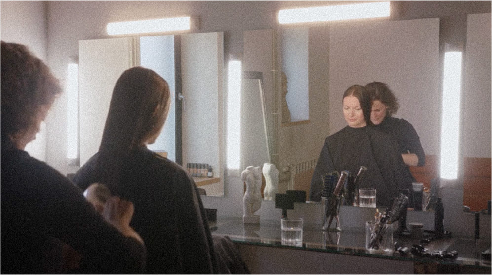
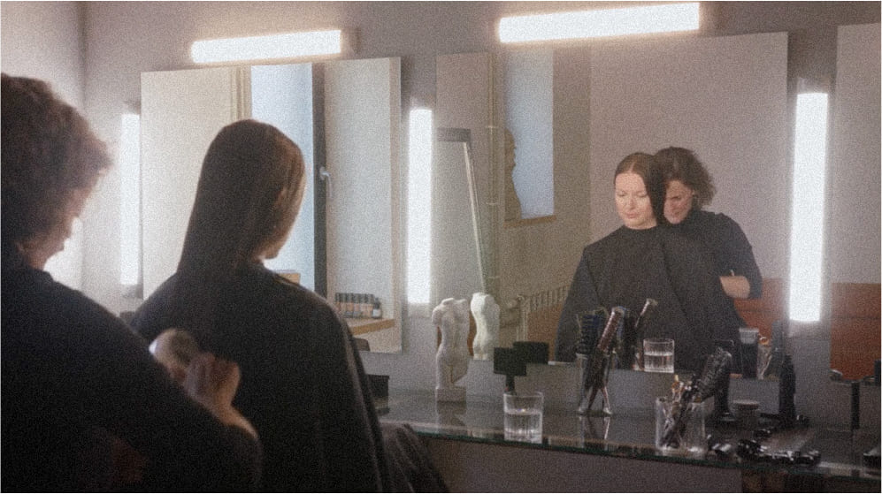

Ejot gar jūru, man atnāca impulss.
Es gribu kaut ko darīt ar matiem, jo neizbēgami ķīmijterapija priekšā. Es tāpat matus zaudēšu. Gribu, pirms tas notiek, pati ar to kaut ko izdarīt.
Satiku Aiju Ūdentiņu, kura man atklājās ne tikai kā izcils meistars, bet arī neticami iejūtīgs sarunbiedrs. Aija ļāva man iejusties dažādos tēlos, kuriem citos apstākļos diezin vai būtu uzdrīkstējusies, un izdzīvot visdažādākās emocijas, gan atgriežoties pagātnē, gan sperot soļus tur, kur nekad nebiju domājusi nonākt.
Šajās epizodēs, kas uzņemtas starp manu operāciju un ķīmijterapijas kursu, Aija griež manus matus, un mēs sarunājamies.
 

1. epizode
Laiks ir atvadīties 1 h 15 min.
Mūsu pirmā iepazīšanās, sarunas par un ap izskatu. Aija atklāj savus novērojumus par cilvēku vēlēšanos svarīgus dzīves pavērsienus pasvītrot ar pārmaiņām matos. Griezums – karē. Karē ir bijis mans pamatgriezums lielāko daļu bērnības. Šī izvēle – simboliska atgriešanās bērnībā, jaunā sākumpunktā. Ieraksts: 14.05.2020.
3. epizode
Slēpt neko nevajag 1 h 9 min.
Beidzot atklāju Aijai visu, kas ar mani noticis, izstāstu par diagnozi, operāciju un savām pārdomām pirms gaidāmās ķīmijterapijas. Par to, kā sastapšanos ar slimību uztver mani bērni. Griezums – zēngalviņa. Griezums, ar kuru jau kā padsmitgadniece jutos kā sīks puišelis. Ieraksts: 14.05.2020. Ieraksts: 14.05.2020.
4. epizode
Nē, nu arī nav slikti 49 min.
Gan raudu, gan smejos. Salūstu, taču ne zaudēto matu, bet neizbēgamās realitātes un savu baiļu priekšā. Griezums – 9 mm. Šāds griezums man būs pirmo reizi dzīvē. Mana gatavošanās ķīmijterapijas izraisītajai alopēcijai. Ieraksts: 14.05.2020.
Mana pirmā tikšanās ar Aiju pēc atveseļošanās.
5. epizode
Pēc gada 1 h 9 min.
Mana pirmā tikšanās ar Aiju pēc ķīmijterapijas kursa. Šajā laikā piedzīvots tik daudz, un gribas daudz ko pateikt. Es satraucos. Griezums – pēc gada. 15.05.2021.
Sarunas par savas balss meklējumiem pasaules troksnī
Audzināšana, normas, tradīcijas, sabiedrības gaidas – kā šajā visā sadzirdēt sevi un pieredzēt autentiskāku dzīvi? Katra saruna veltīta tēmai, ar kuru esmu personīgi saskārusies savā atveseļošanās ceļā, un kuru turpinu risināt joprojām.
Parunāsim?
Iespējams, tev tagad ir kas sakāms. Varbūt arī tu vai kāds no tuviniekiem šobrīd iet vai gājuši cauri līdzīgai pieredzei – ja vēlies, uzraksti man.